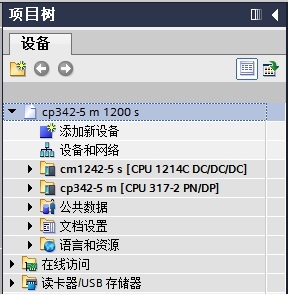
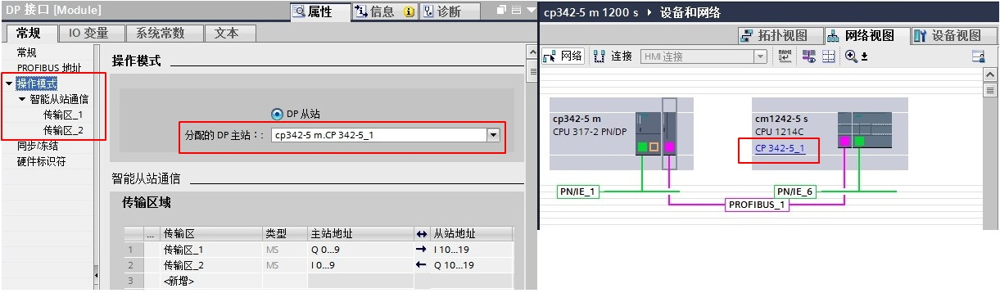
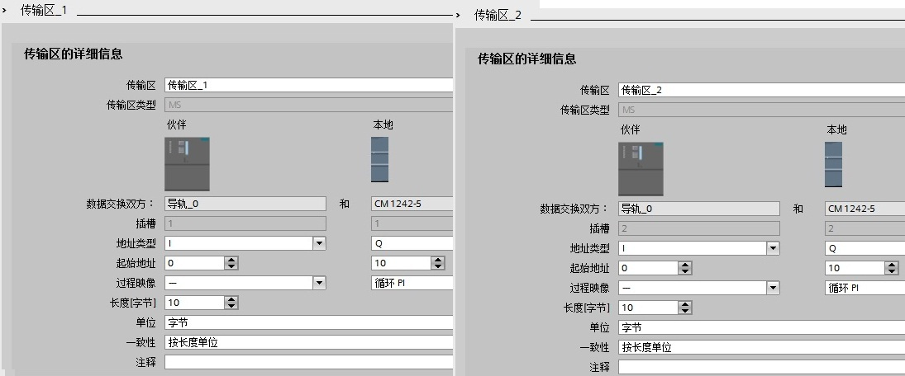
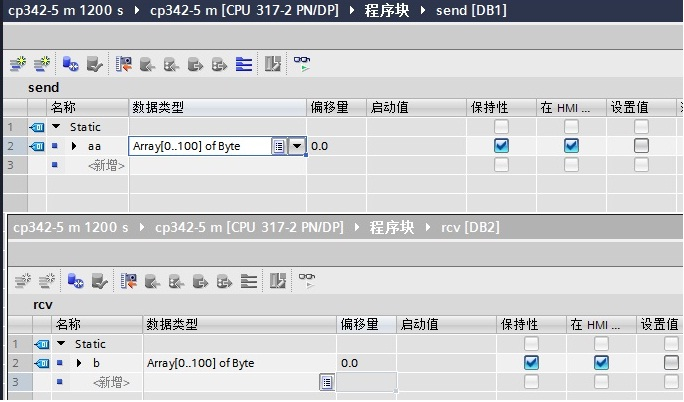
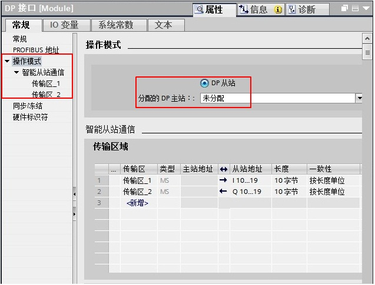
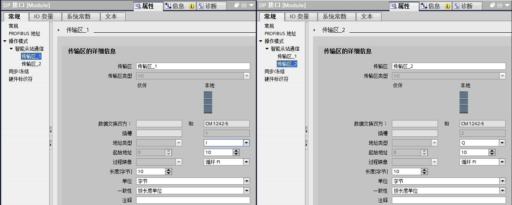
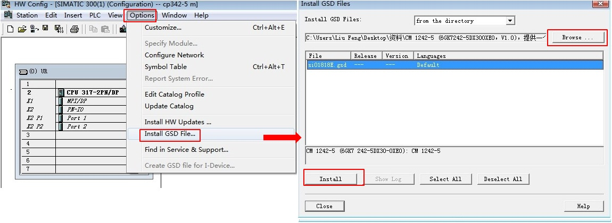
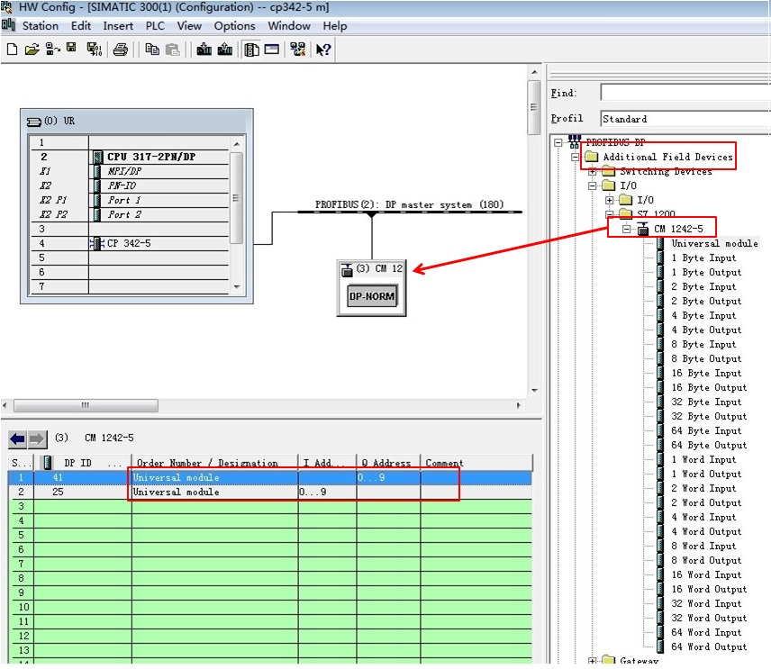
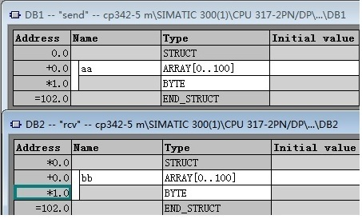
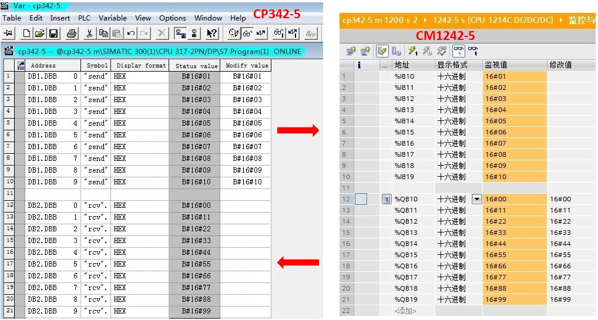

使用 S7-1200 与 S7-300 用 CP342-5 进行主从通信，这里 CP342-5 做为主站，将 S7-1200 的 CM1242-5 做从站。
硬件：
软件：
S7-300 用 CP342-5 做 DP主站，S7-1200 通过 CM1242-5 做从站，这种方式可以分2种情况来操作，具体如下：
使用 STEP7 V13 创建一个新项目，并通过“添加新设备”组态 S7-300 站 CP342-5 m，选择 CPU 317-2 PN/DP；接着组态 S7-1200 站 cm1242-5 s，选择 CPU1214C DC/DC/DC V2.1，如图 1 所示。

图 1 在新项目中插入 S7-300 站和 S7-1200 站
组态 CP342-5 DP 接口，进入属性框，在“PROFIBUS 地址”界面，添加子网“PROFIBUS_1”，地址选择 2；在“操作模式”界面，操作模式选择“DP 主站”，如图 2 所示。
图 2 组态主站 CP342-5 的 DP 接口
接着组态从站 CM1242-5 的 DP 接口，进入 CM1242-5 的属性框，在“PROFIBUS 地址”界面，选择子网“PROFIBUS_1”，站址选择 3，如图3所示；

图 3 组态从站 1242-5 DP 接口
在“操作模式”界面，选择“DP 从站”，“分配的 DP 主站”选择“cp342-5 m.CP 342-5_1”，在传输区域创建 2 个区域（“传输区_1”、“传输区_2”），输入输出各 10 个字节，如图 4 所示。


图 4 组态 CM1242-5 操作模式和传输区
在 S7-300 侧，CP342-5 进行数据发送接收，需要通过编程实现。首先创建发送和接收数据块 DB1 和 DB2，定义成101个字节的数组，如图 5 所示。

图 5 CP342-5侧创建接收发送数据块
在 OB1 中，从“指令”>“通信”>“通信处理器”>“Simatic NET CP”>“PROFIBUS DP”下，调用DP_SEND、DP_RECV通信指令，如图 6 所示。


图 6 发送接收指令调用和 CPLADDR 地址
功能块参数意义如下表1.
管脚 |
说明 |
CPLADDR |
模块的起始地址（当组态CP342-5时，在组态表中显示模块的起始地址，这里是256）； |
SEND |
发送数据区，对应从站的输入区； |
RECV |
接收数据区，对应从站的输出区； |
DONE |
发送完成位：作业完成，无错误，该位置1且保持一个脉冲； |
NDR |
接收完成位：作业完成，无错误，该位置1且保持一个脉冲； |
ERROR |
错误位：0-无错误；1-出现错误，错误原因查看STATUS； |
STATUS |
调用功能块时产生的状态代码； |
DPSTATUS |
PROFIBUS_DP的状态代码 |
表 1. 功能块参数意义
在同一项目中，分别为 S7-300和 CPU1214C 创建监控表，进行通讯测试，如图 7 所示。

图 7 监控结果
S7-300用 CP342-5 接口做 DP 主站，CM1242-5 做 DP 从站，不在一个项目中的操作，即：CPU 1214C 使用 Step7 V13，而 S7-300使用Step7 V5.5。
使用 STEP7 V13 创建一个新项目，并通过“添加新设备”组态 S7-1200 站1242-5s，组态 CM1242-5 的 DP 接口，进入 CM1242-5 的属性框，添加子网“PROFIBUS_1”，站址选择 3，如图 8 所示；

图 8 组态从站 1242-5 DP 接口
“操作模式”界面，选择“DP 从站”，“分配的 DP 主站”选择“未分配”；在智能从站通信的传输区域添加 2 个传输区（“传输区_1”、“传输区_2”），数据长度都是 10 个字节。
注意：与主站的输入输出对应，即：“传输区_1”为从站的 10 个字节的输入，“传输区_2”为从站的 10 个字节的输出，如图9所示。

图 9 组态 CM1242-5 操作模式和传输区
主站项目软件使用的是 Step7 V5.5，首先安装 CM1242-5 的 GSD 文件。CM1242-5 的 GSD 文件下载链接：si01818e。
在软件 Step7 V5.5 中，通过“Options”进入“Install GSD File…”界面， 在源路径选择 CM1242-5 的 GSD 文件存放路径，选择GSD文件，点击“Install”进行安装，如图 10 所示。

图 10 Step7 V5.5 安装 CM1242-5 的 GSD 文件
接着在主站项目中组态从站，将 CM1242-5 拖放到主站的 DP 网络中，使用“Universal module”组态输入输出。注意：主站的输入输出与图9中的从站“传输区_1”和“传输区_2” 必须要对应，即：主站的输出对应从站的输入，输入对应从站的输出，如图 11 所示。

图 11 组态从站 CM1242-5（V5.5 软件）
在 S7-300 侧，CP342-5 进行数据发送接收，需要通过编程实现。首先创建发送和接收数据块 DB1 和 DB2，定义成101节的数组，如图 12所 示。

图 12 CP342-5侧创建接收发送数据块
在 OB1 中，从“Libraries”>“SIMATIC_NET_CP”>“CP 300”下，调用FC1（DP_SEND）、FC2（DP_RECV）通信指令，如图13 所示。


图 13 发送接收指令调用和 CPLADDR 地址
关于功能块参数意义参考上表 1.。
在不同项目中，分别为 S7-300和 CPU1214C 创建监控表，进行通讯测试，如图 14 所示。

图 14 监控结果